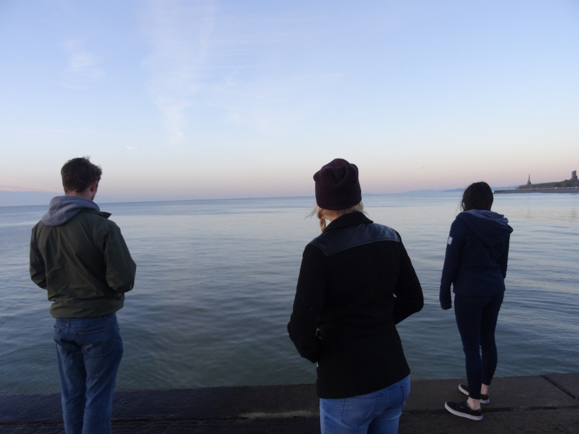

Challenges are what drives me. Be it a challenge I set myself, or a challenge my work presents me with, I enjoy the process of working towards that goal and achieving it.
Programming is not only my career, but also one of my favourite hobbies. I enjoy spending much of my time working on pet projects and learning new languages and tools.
Achieved grades BBBD in Computing, Mathematics, General Studies and Physics at A-Level.
[In-Progress] BCS Accredited Software Engineering Bachelors Degree (4Yr Integrated Industrial Year) Aberystwyth University.
[In-Progress] AWS Certified Cloud Practitioner.
Currently employed in BT Consumer as a Software Developer.
